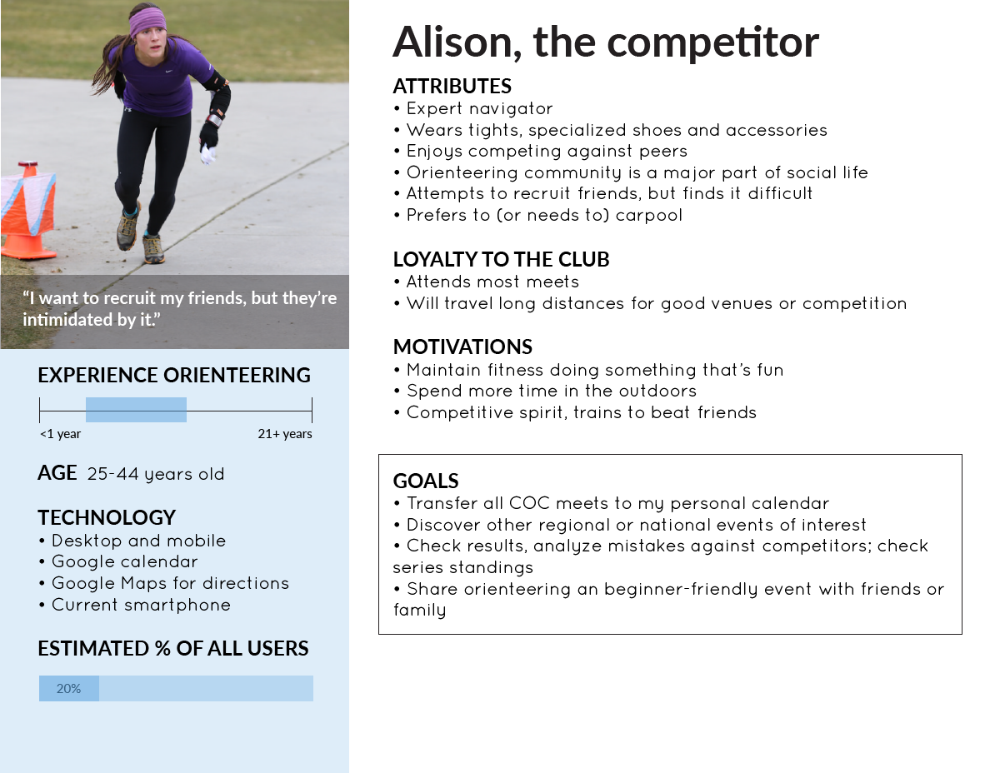
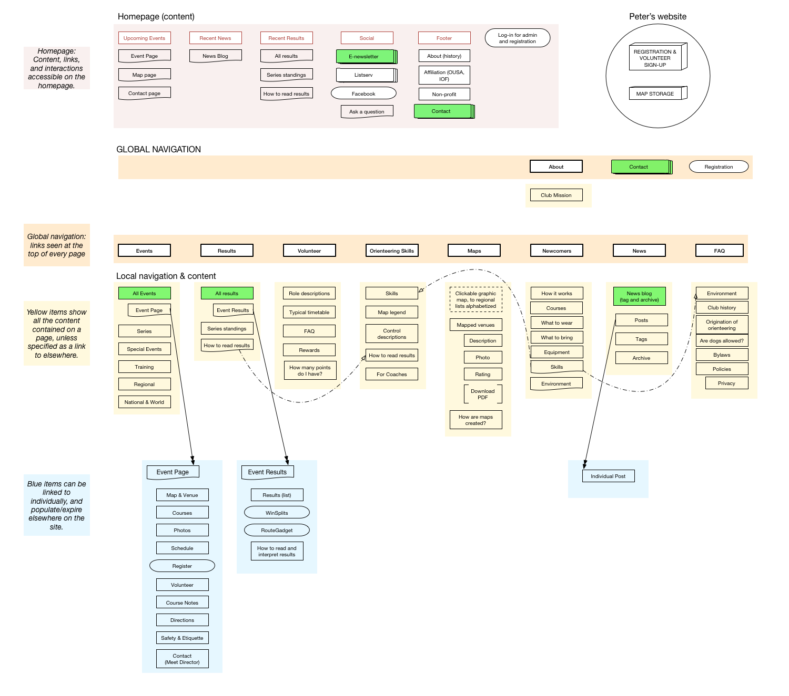

As an enthusiastic orienteer who loves introducing newcomers to the sport, I initiated a complete redesign of Cascade Orienteering Club’s website, with special attention toward making it more newcomer-friendly. I did this as my capstone project for BLOC, in lieu of their much simpler standard project, so that my work could have a real impact.
I began by interviewing users, from prospective participants to long-time veterans. I asked interviewees about how they regularly used the website, then had them complete various tasks on the site while they narrated their thinking. From these interviews, I pinpointed user frustrations and goals, which I used to generate user personas, user flows, and the basic foundation of my design choices.
The main challenge I found, would be to present veterans with the essential information they needed, while walking newcomers through the unfamiliar and intimidating sport of orienteering. Additionally, I had to think about how volunteers could easily update and manage the site on their own.
Veteran orienteers want to efficiently access a few things: the event calendar, registration, directions to the next event, and the most recent results. The solution here was the most straightforward: make all of these things accessible from the front page.
Newcomers on the other hand, needed a lot more information, as my interviews revealed that much of orienteering was confusing to them. The trick would be to provide this information without slowing veterans down. Here are a few of the features I designed with newcomers in mind:
Event pages contain typical event information: schedule, fees, venue, etc. However, even this basic information requires a bit of extra explanation for a newcomer to orienteering. For instance, many orienteering events use an interval start, which is unlike the common mass start. Also consider the registration fee, which changes depending on whether you own an e-punch or not, but a newcomer doesn’t even know what an e-punch is yet.
As a solution, I added light blue boxes to event pages to contain this newcomer-oriented content. This highlights the content for newcomers, while a veteran who has visited the site before will know to skip over it.
Designing with club volunteers in mind, I included default messages in these boxes and had them auto-populate in the most relevant section of the event page. However, not every event requires the same explanation, so I coded these auto-filled blocks so that they could be easily edited or deleted by club volunteers on a per-event basis.
One point of disconnect between veteran orienteers and newcomers, was insider knowledge about venues. Orienteering events take place in a wide variety of venues, from urban college campuses, to rugged forests. As a result, the same “Advanced” level course at one venue is an extremely different experience at another. While course notes sometimes described these differences, they were not enough to relay this varying difficulty to newcomers. One orienteer told me that he “didn’t know orienteering could even be that hard,” in regards to his first encounter with rugged orienteering. This was an orienteer with several years, and even he was not being effectively communicated to about the true difficulty of the venue, at least in a way that was meaningful and relative to his own experience.
My solution was to give each venue their own page, which would host a description, a navigational and physical difficulty rating on a scale from 1 to 10, and a preview of the map. The description outlines what to expect from the venue, such as “uneven footing” or “dense vegetation areas.” However, without much orienteering knowledge, a new orienteer won’t know what “uneven footing” is really like, and how it’ll impact their race. Here, the rating system has its advantage, for being a concrete point of a reference.
A new orienteer tends to begin at a city park they are familiar with, which are generally rated 2 to 5 in navigational difficulty. Now, with that point of reference, if the same orienteer sees an event at a venue rated a 9, they can have a more relative concept of how much greater the orienteering challenge is at the rugged venue.
The map preview provides newer orienteers the opportunity to become acquainted with a map before an event, a distinct advantage that veterans had exclusively enjoyed, as veterans have orienteered at virtually every venue the club offers. The former map library was incomplete and hard to find, but design pushed to get every club map online, then to link to these map pages from event pages, where they are relevant to the user.
My findings showed that newcomers really wanted every detail spelled out for them. Many are self-conscious about their current navigation abilities, and they thoroughly read the site to learn as much as they can about orienteering before their first event in an effort to reduce the likelihood that they’ll embarrass themselves. In an interview with a newcomer, I described what might seem like a plain or unimportant detail about an orienteering event, that “the start is usually at a tent, with several chutes coming out of it.” The interviewee lit up, “that’s the kind of details that I want to know!”
So I wrote a thorough newcomer section that outlined everything about the orienteering experience. I did not just cover the act of orienteering, but described an orienteering event from beginning to end, and I did it all with friendly, approachable, jargon-free language. This section is linked to throughout the site, including prominently on the front page, and contextually on event pages.
In addition to conducting research and designing the site, I also wrote the Wordpress theme from scratch (PHP). Writing a theme from scratch (as opposed to tweaking an existing theme) gave me complete control over the design, while Wordpress provided and easy-to-use CMS for club volunteers and admin.
Aside from simple sites written only in HTML and CSS, this was my first major coding project. PHP was not taught through the BLOC program, so I utilized online tutorials and articles to pick up the language.
The site has been well-received by both Cascade Orienteering Club and the broader orienteering community. North American orienteering club sites have been notorious for being vastly outdated. By contrast, the modern aesthetics, responsive design, and user-centered design explanations have gained attention from the community, and has inspired more orienteering club website overhauls around the world.
You can visit the live site at cascadeoc.org